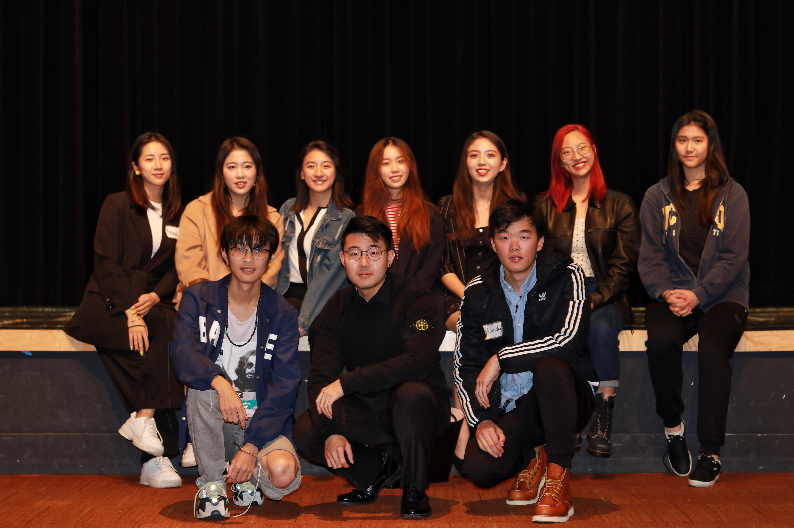

TripleC Product Design
Here at TripleC (Chinese Computer Community), We incubate and help young
ideas grow using the design principles and research methods we learned here at UCSD. I reformed the UI/UX Department and changed it into Product Design
Department, aiming to build a more well-rounded design cycle and better experience for the student designers we recruited, designing not only the interface
but also the whole idea behind a product that user experience. Currently, I lead teams of empathetic designers, conducting research-based product design for
around 10 websites & apps & data science projects each quarter, practicing needfinding research, product competitor analysis, user research & iterative
prototype testings, interface design etc.
We are indispensable part of TripleC's agile teams, collaborating with coders, PMs, datascientists to solve real-world problems. Also, PD prepares students
with workshops and networking opportunities with industry and alumni, facilitating the design community in UCSD.
As TripleC motto goes, "Make it Happen". We ideate, build, test, repeat.
Our work
Learn more on TripleC official website! See the project page for more details and who is on the team.
Demo Day
Demo day is TripleC's tradition every quarter at week10. We showcase our work and pitch ideas.
2019 Fall Demo Day - UIUX Department (part of us) @ Demo Day
2019 Spring Demo Day - audience playing with interactive live demo at demo day project booth.


2019 Spring Demo Day guests making crique after each project did their 3min pitch.
From left to right, Alex Li from ServiewNow (UIUX), Xiayu from Apfolio (Senior Software Engineer), Thomas Powell
(UCSD CSE Professor), Paul Cao(UCSD CSE Professor), Sicun Gao(UCSD CSE Professor)